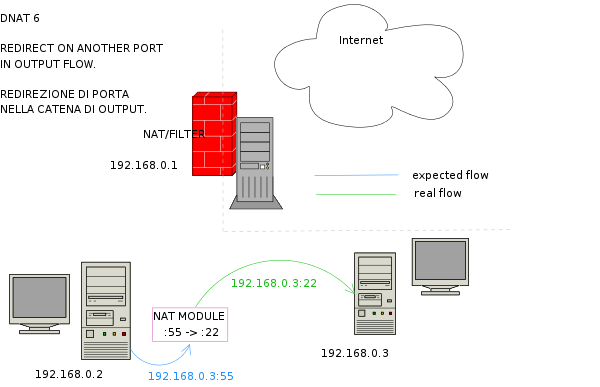

Scenario 6.
Destination nat: connection redirected from service X to Y in output phase..

Host 192.168.0.2 connects to 192.168.0.1, port 55. In output phase, port is changed from 55 to 22, so the first machine can connect to ssh server on 192.168.0.1. The screenshot below shows console IPFIRE output.

Destination port 55 becomes destination port 22 in output direction.